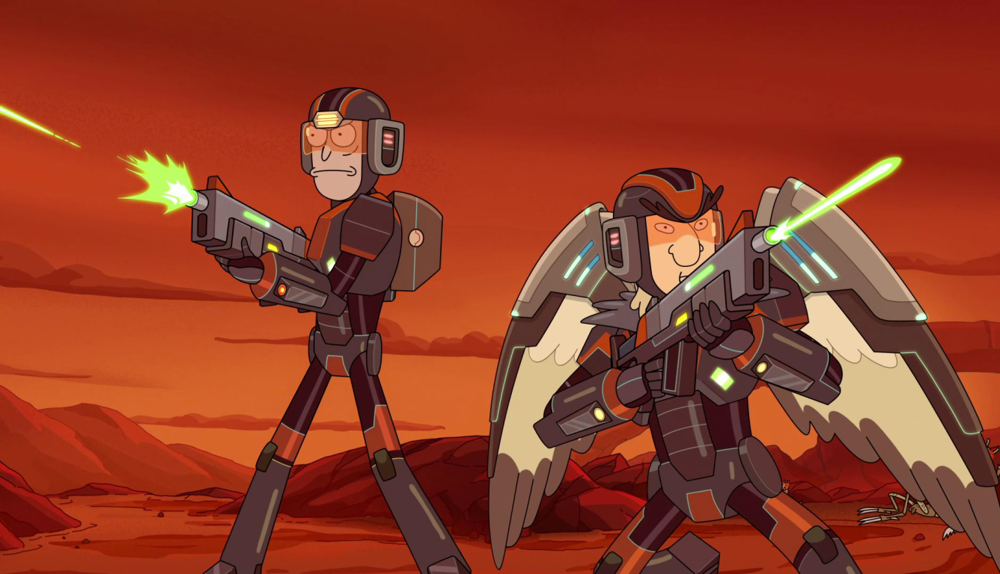

RoboCop is an American cyberpunk action media franchise featuring the futuristic adventures of Alex Murphy, a Detroit, Michigan police officer, who is fatally wounded in the line of duty and transformed into a powerful cyborg, brand-named RoboCop, at the behest of a powerful mega-corporation, Omni Consumer Products. Thus equipped, Murphy battles both violent crime in a severely decayed city and the blatantly corrupt machinations within OCP. Bluechew
